Java Projects
Click on the pictures or download the jar file and run the application.
Tetris
This is a basic Tetris game with sounds and replay feature.
 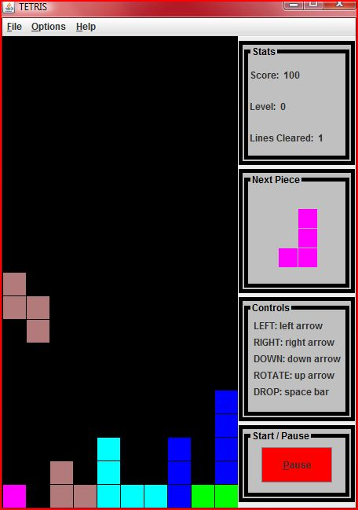
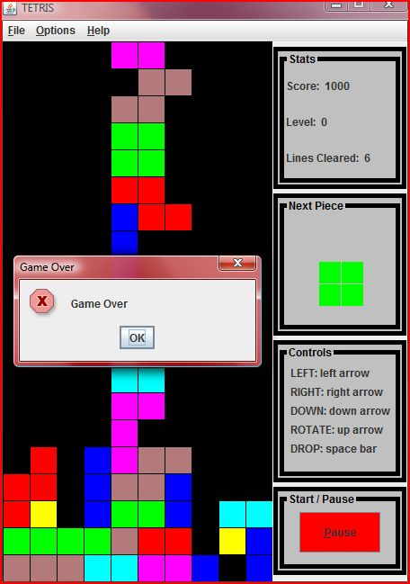
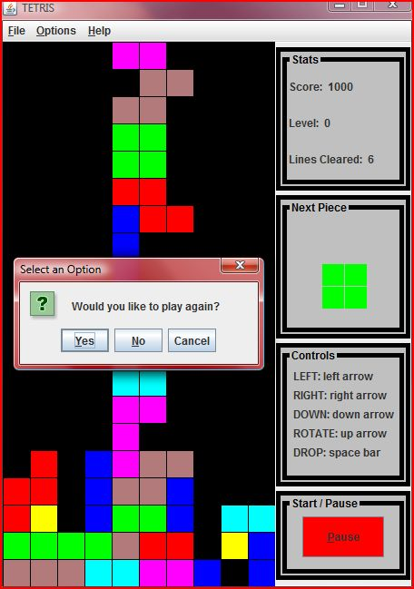
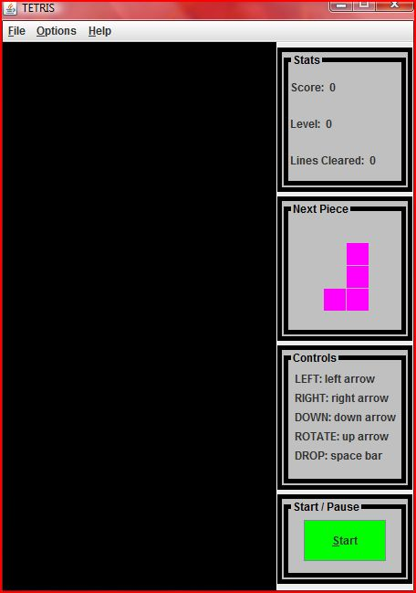
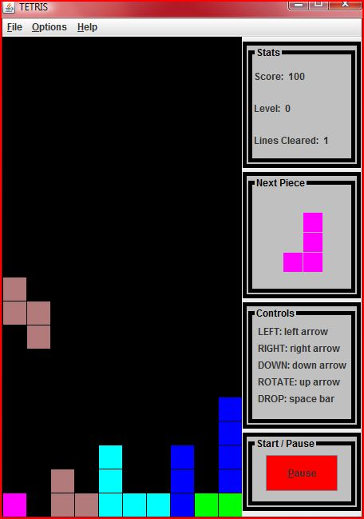
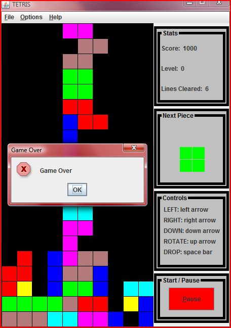
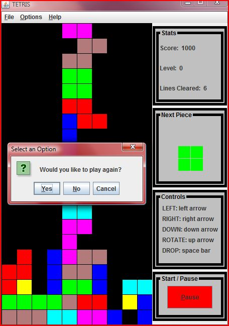
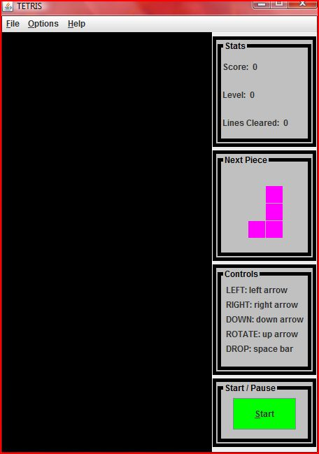

Power Paint

Web Crawler
A simple web crawler that searches web pages for occurrences of key words. Choose between single or multi-threaded.
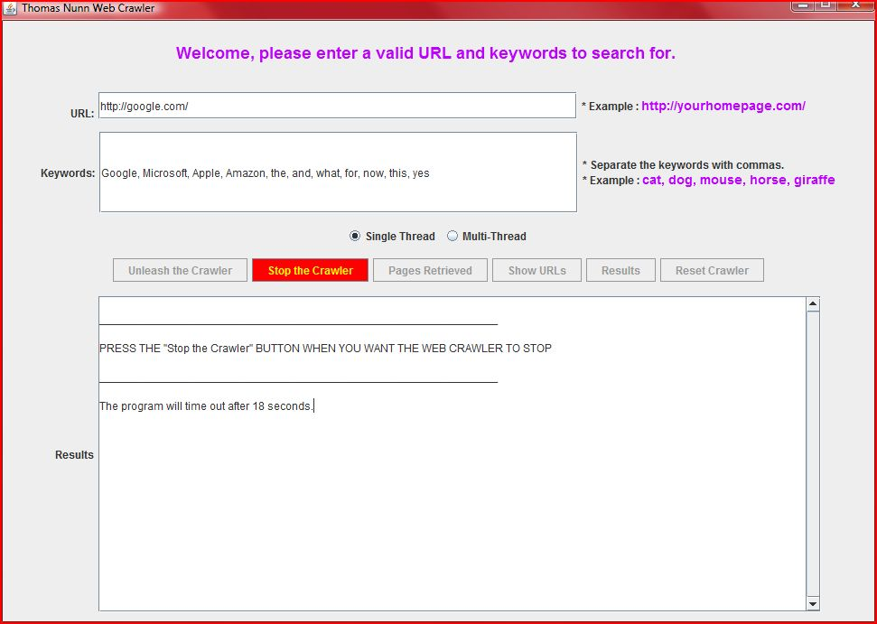 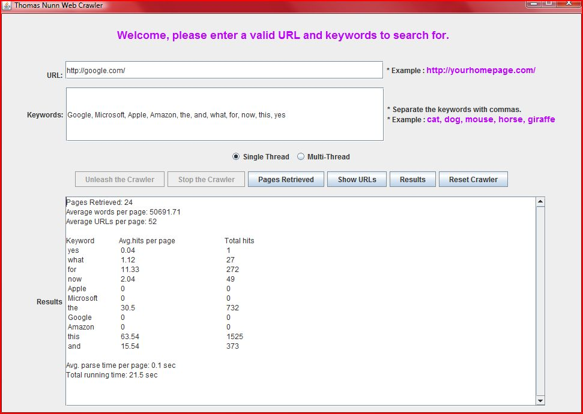 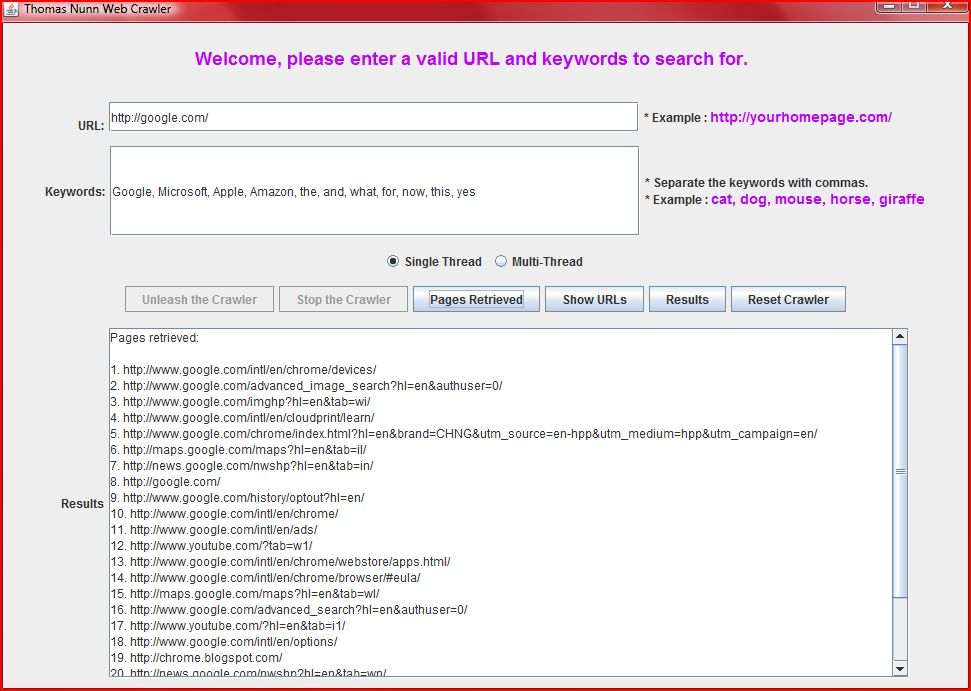 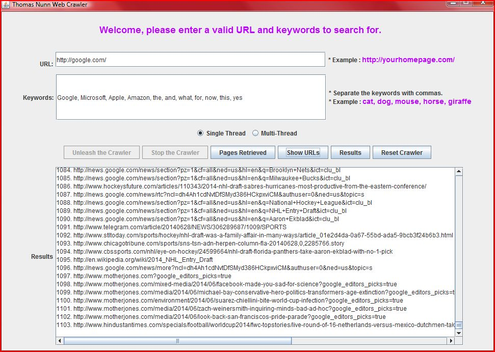 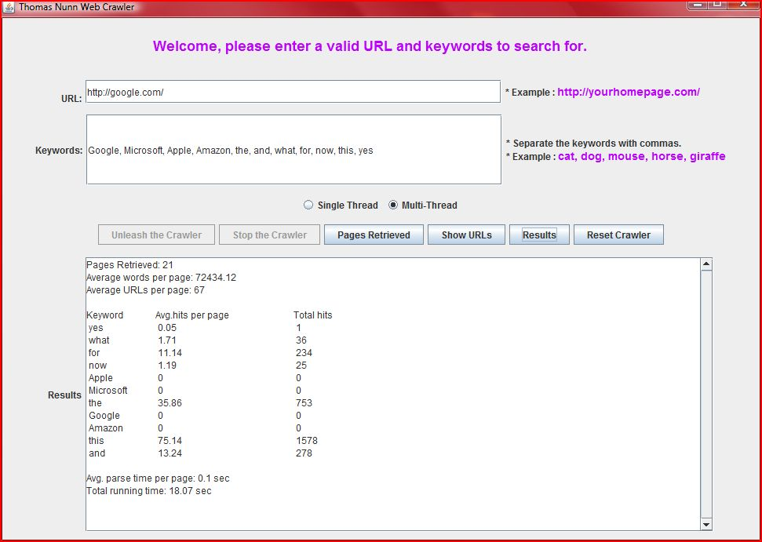
Word Count
Read in a text document and output the most commonly occurring words in descending order. Choose between using a Hash Map or Tree Map and notice the speed difference.


Prim's Algorithm
Find the minimum spanning tree of a connected weighted undirected graph.